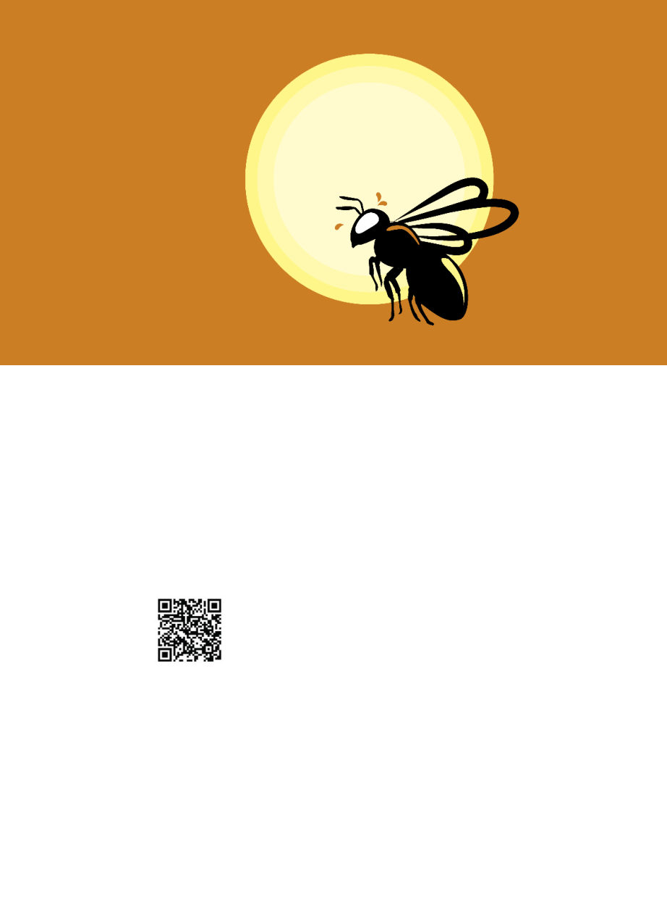

October 2024
1125
I
have often thought of bees in flight
on hot days like it must be like rid-
ing a motorbike for them, the re-
freshing air rushing past. But there’s
a crucial difference in that they don’t
have a gas motor doing the hard work
for them, so it may be more like going
on an energetic run. Not so fun on a
100-degree plus day.
Bees are well able to regulate the
temperature inside hives, and as in-
dividuals can generate heat by “shiv-
ering” their wing muscles, but what
happens when they need to use those
same wing muscles and don’t want to
generate excess heat? How do bees fly
on 100+ degree days
without overheating?
That was the ques-
tion Dr Jordan Glass
at the University of
Wyoming recently
set out to answer.1
Other insects can mitigate heat
stress by being more active at dusk or
night, but bees need light to navigate,
and need to work throughout the day
to keep the hive’s material needs met
— especially since on hot days they re-
quire a liter or more of water per hive
for evaporative cooling, and it’s not
going to collect itself. Reducing the
frequency of wing beats can reduce
metabolic heat production,2 but typi-
cally would be assumed to significant-
ly reduce lift capacity, and there’s little
point in going on a flight if you can’t
bring anything back. Honey bees rou-
tinely carry 20-35%, and sometimes as
much as 80%, of their own weight in
foraged materials.3
Studies have shown that bees can
stay alive inside a hive in extreme
temperatures (in one example a colo-
ny was surviving at regular external
temperatures of 60ºC (140ºF) on an
(inactive) lava field, with the internal
temperature never exceeding 36 C (97
F),4 but if individual bees’ body tem-
perature reaches 49-50 C (120-122 F)
they will die.5 If bees become unable
to leave the hive and forage, then the
hive will be on a crash course with
running out of resources and failing,
so how bees’ flight performance is af-
fected at high temperatures is worth
having a look at.
Dr Glass and his colleagues set out
to study exactly this. They measured
flight muscle temperatures, flight
metabolic rates, and water loss rates
of honey bees carrying nectar in a
controlled setting at 20 C (68 F), 30
C (86 F) and 40 C (104 F). They also
used high-speed video to analyze
wing movements at 25 C (77 F) and
40 C (104 F).
Wing movement (“kinematics”) in
flight consists of two pertinent move-
ments: a sweeping motion (“trans-
lational force”), and the creation of
rotational vortices when rotating the
wing before reversing direction. Some
insects generate more lift during the
sweeping stage, while others generate
more on the rotational stage. Normal
flight of honeybees is about an even
balance. [See also “The Dynamics of
Honey Bee Flight,” by Bill Hesbach,
May 2024 ABJ.]
The first set of experiments was con-
ducted at Arizona State University in
the Sonoma Desert. Researchers used
bees from three hives maintained by
the university to study the effect of
air temperature on body tempera-
ture, metabolic rate and water bal-
ance. They captured bees leaving the
hive for foraging runs (who would
therefore be unloaded) and weighed
them, finding an average mass of 70
mg with very little variation. They
then fed these bees between 0 and 45
microliters of sugar solution in a tem-
perature-controlled room.
Immediately after feeding, the
bees were transferred into cylindri-
cal flight chambers, rested for two
minutes, and then encouraged to fly
by shining a light at them, tapping
on the cylinder or inverting it. Car-
bon dioxide and water content (the
results of respiration) of the outgoing
air from the cylinder was monitored
to calculate the bees’ respiration.
What I’m giving you here is of course
the extremely simplified overview of
the process laid out in the paper —
see the paper itself if you particularly
want details about “LI-COR LI-7000
CO2/H2O analyzers” and “soda lime
Honey Bee Icarus:
Temperature
Limitations
of Bees in Flight
A summary of recent research
by Kris Fricke